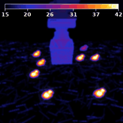
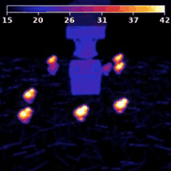

🐤 Poultry-VLA — 양계장 Vision-Language-Action 프로젝트
🎬 데모 영상
우리가 만든 데이터 — 스크립트 컨트롤러 성공 데모 100개 (동시 재생)

각 장면은 seed별 랜덤 배치 + 살아있는 병아리 배회(wander). IR 열화상에서 사체=파랑, 생체=밝음.
| ✅ 성공 데모 (학습 데이터) | ❌ 실패한 추론 (학습된 모델) |
|---|---|
 |
 |
| 파란 병아리를 집어 바구니에 안착 | 병아리 위 1mm까지 가지만 하강·파지 못 함 |
1. 프로젝트 개요
과제. LIBERO 시뮬레이터에서 로봇팔(Panda)이 IR 열화상으로 렌더된 양계장 바닥에서, 살아있는(따뜻한·밝은) 병아리들 사이에서 죽은(차가운·파란) 병아리를 골라 집어 바구니에 담는다.
- 핵심 아이디어: IR 카메라에서 저온체=파란색 → 사체 탐지. 살아있는 병아리는 체온으로 밝게 보임(distractor, wander로 배회).
- 언어 지시:
"Pick up the blue chick and place it in the basket" - 관측: 256×256 agentview RGB → thermal 후처리(컬러바 포함) → 모델 입력 224×224
- 액션: 7차원 (eef Δxyz + Δ회전3 + 그리퍼)
- 학습: 스크립트 컨트롤러로 성공 데모 수집 → RLDS 변환 → OpenVLA-7B LoRA fine-tune → 평가
2. 엔드투엔드 파이프라인
① 장면 생성 generate_chicken_farm_bddl.py (랜덤 배치: 따뜻한 7 + 죽은 1, seed별) ② 데모 수집 scripted_blue_chick.py (P-control 컨트롤러 + 살아있는 병아리 wander) (6워커 병렬) collect_blue_chick_demos.py → 성공 궤적만 HDF5 저장 (thermal 적용) ③ RLDS 변환 blue_chick_thermal_dataset_builder.py (no-op 필터링, LIBERO 호환 스키마) ④ Fine-tune finetune.py (LoRA r32) + train_v3.sh (어댑터 스냅샷 방식으로 디스크 절약) ⑤ 병합·평가 merge_adapter.py → eval_trainscene.py (학습분포 일치 평가, 파지/성공 추적)
3. 우리가 한 일 (요약)
thermal_fx.py), 병아리 wander 시스템, 스크립트 grasp 컨트롤러, 6워커 병렬 수집.4. 결과 — 어디까지 갔나
(모델 학습 성공 증거)
(평가를 학습분포로 일치 후)
(최종 미해결 블로커)
(3개 해결, 1개 구조적)
| 단계 | 구성 | 결과 |
|---|---|---|
| v1/v2 | 거친 액션(게인8), 3마리 goal, 평가 OOD | 0% — 로봇 정지 |
| 진단 | in-dist 예측 / 좌우반전 / thermal해상도 / 폐루프 추적 | 근본원인 층층이 규명 |
| v3 | 부드러운 액션(게인4/6), 1마리, 평가=학습분포 | 위치 1mm 도달, 파지 0% (구조적 원인) |
5. 실패 원인 분석 (핵심)
0%의 원인은 단일 버그가 아니라 4겹이었고, 앞 3겹은 해결, 마지막 1겹이 구조적 한계다.
| # | 원인 | 증거 | 상태 |
|---|---|---|---|
| 1 | 이미지 좌우 반전 — 수집 [::-1] vs 평가 [::-1,::-1] | 반전 입력 시 모델 Y축 예측 부호 뒤집힘 (+0.5→−0.498) | 수정 |
| 2 | thermal 해상도 불일치 — 학습 256 / 평가 224에서 적용 | thermal@224면 예측 약화(Y −0.5→−0.06), @256이면 정상 | 수정 |
| 3 | 평가 셋업 OOD — 고정 BDDL + 정지 병아리 | 고정장면 8.3cm vs 학습분포(랜덤+wander) 1mm | 평가 일치로 해결 |
| 4 | 파지 단계 모호성 — 메모리·proprio 없는 단일스텝 정책 | 병아리 위에서 하강 안 함(z=0.30 고정), 그리퍼 안 닫힘 | 미해결(구조적) |
최종 근본원인 — 데이터가 증명한 "시간적 모호성"
핵심 발견: 병아리 2cm 이내라는 같은 위치에서, 정답 액션이 그리퍼 단계에 따라 정반대다.
| 병아리 2cm 이내 (학습 데이터 204 데모) | z-action 평균 | 방향 |
|---|---|---|
| 그리퍼 열림 (파지 전: 접근/하강) | −0.297 | 99.9% 하강 |
| 그리퍼 닫힘 (파지 후: 들기) | +0.333 | 73.5% 상승 |
그런데 두 순간의 카메라 이미지는 거의 동일(그리퍼가 병아리 위)하다. OpenVLA는 (a)메모리 없는 단일프레임, (b)자기 그리퍼 상태·높이(proprioception) 미입력 → "지금 하강 단계인지 들기 단계인지"를 알 방법이 없다. 같은 이미지에 정답이 −0.3과 +0.3으로 갈리니 모델은 평균(≈0)을 예측 → 제자리 맴돔. 그리퍼도 마찬가지로 드문 "닫기 결정"(데모당 1회 = 전체의 0.49%)을 못 잡고 다수 상태(열림)로 회귀한다.
→ 데이터엔 하강(54%)·닫기(46%)가 충분히 있다. 모델이 단계를 구분할 입력이 없는 게 문제다.
6. 핵심 진단 증거
- 모델은 학습 성공: 학습 이미지를 직접 넣으면 정답 위치 액션을 오차 ~5mm로 예측 → 데이터 양/학습량 문제 아님.
- 거친(bang-bang) 액션: 옛 컨트롤러(게인8) 액션의 48.7%가 ±0.5 포화 → 게인 완화(4/6)로 36%·중앙값 0.49→0.37, 에피소드 622→203스텝.
- 위치추정 회복: 평가를 학습분포(랜덤 장면+wander, thermal@256,
[::-1])로 맞추자 8.3cm→1mm. - 파지 폐루프 추적: 모델이 병아리 2cm까지 가지만 하강 안 하고 z=0.30에 떠서 맴돌고, 그리퍼는 내내 열림(1.00).
- 제외된 가설: 데이터 양(100↔200), 학습시간(15k↔30k), no-op비율, 렌더엔진, thermal 비결정성, 그리퍼 부호 — 모두 원인 아님(검증 완료).
상세 수치·로그는 docs/FAILURE_ANALYSIS.md 및 diagnostics/ 스크립트 참조.
7. 성공하려면 — 해결 방법 (확률 높은 순)
| 순위 | 해결책 | 왜 |
|---|---|---|
| 🥇 | proprioception 입력 추가 (그리퍼 상태 + eef 높이) | "열림→하강 단계 / 닫힘→들기 단계"를 모델이 즉시 구분 → 5절 모호성 원리적 해소 |
| 🥈 | action chunking (미래 K스텝 예측) | 드문 "닫기 결정"(0.49%)을 청크로 commit → 타이밍/dithering 해결 |
| 🥉 | OpenVLA-OFT 재학습 (1+2 통합 + 연속 L1 액션헤드) | proprio·청크·연속액션 동시 도입, 이산화 한계까지 해결. 가장 정공법. |
| 보조 | 그리퍼를 따뜻한 색으로 렌더 / 타깃 대비 강화 | thermal에서 그리퍼+사체가 둘 다 파랑이라 합쳐지는 문제 완화 |
8. "조금만 더?" vs "데이터부터 재구축?" — 정직한 평가
데이터부터 재구축할 필요는 없다. 다만 "하이퍼파라미터 한 번 더"로 끝나는 수준도 아니다 — 학습 아키텍처(레시피)를 OpenVLA-OFT로 교체하는 중간 규모 작업이 남았다.
| 자산 | 상태 |
|---|---|
| 장면 생성기 · thermal 렌더 · wander | 완성 · 재사용 |
| 데모 데이터 204개 + RLDS (하강 54%·닫기 46% 신호 확인됨) | 정상 · 재사용 (재구축 불필요) |
| 평가 파이프라인 (학습분포 일치, 파지/성공 추적) | 완성 · 재사용 |
| 실패 원인 진단 | 완료 (근본원인 확정) |
| 남은 일: proprio + action chunking (OpenVLA-OFT)로 재-fine-tune | 미완 (핵심 한 가지) |
예상 노력: 데이터·평가·진단이 끝나 있으므로, OpenVLA-OFT 세팅 + 재학습 + 평가의 약 1~3일 엔지니어링. 근본원인이 명확하고 데이터가 탄탄하므로 성공 확률은 높다고 판단.
9. 코드 구조 (이 레포)
Poultry-VLA/ ├── index.html 이 보고서 ├── data_pipeline/ 장면 생성 · 데모 수집 · 컨트롤러 · thermal │ ├── generate_chicken_farm_bddl.py 랜덤 양계장 BDDL 생성기 │ ├── scripted_blue_chick.py P-control grasp 컨트롤러 + 병아리 wander │ ├── collect_blue_chick_demos.py 6워커 병렬 성공데모 수집 │ └── thermal_fx.py IR 열화상 후처리 (컬러바) ├── rlds/blue_chick_thermal_dataset_builder.py HDF5→RLDS + no-op 필터 ├── training/ finetune.py(어댑터스냅샷) · train_v3.sh · merge_adapter.py ├── eval/ run_libero_eval.py(수정) · eval_trainscene.py · eval_ckpt.sh ├── diagnostics/ diag_*.py (8종 진단) · review_demos.py └── docs/FAILURE_ANALYSIS.md 상세 실패 분석
참고: training/finetune.py, eval/run_libero_eval.py는 OpenVLA 원본을 본 과제에 맞게 수정한 버전
(어댑터 스냅샷 저장, thermal@256 관측, [::-1] 방향 등). 실행에는 OpenVLA / LIBERO 환경이 필요.
10. 결론
양계장 VLA는 "데이터가 부족해서" 실패한 것이 아니다. 일련의 학습/추론 관측 불일치(방향·thermal해상도·장면분포)를 바로잡자 모델은 죽은 병아리를 1mm까지 정확히 찾아갔다. 마지막 남은 벽은 파지이며, 그 원인은 메모리·proprioception 없는 단일프레임 정책이 "하강 vs 들기" 단계를 구분 못 해 평균(제자리)을 내는, 단일스텝 행동복제의 구조적 한계임을 데이터로 증명했다.
→ 해결책은 proprioception + action chunking(OpenVLA-OFT). 데이터는 그대로 재사용.
시사점: VLA 평가 실패의 상당 부분은 정책 학습 실패가 아니라 (1) 학습/평가 관측·분포 불일치와 (2) 단일스텝·무(無)proprio 정책의 시간적 모호성에서 온다 — 이 진단 방법론 자체가 본 프로젝트의 기여다.